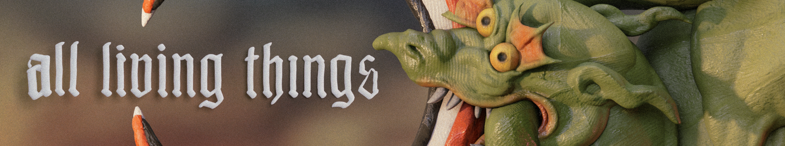
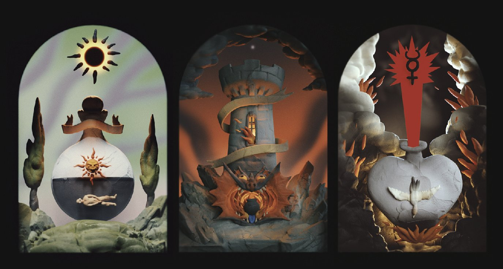
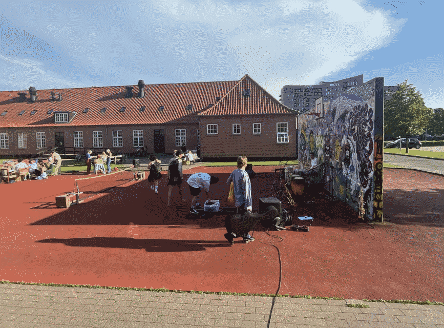
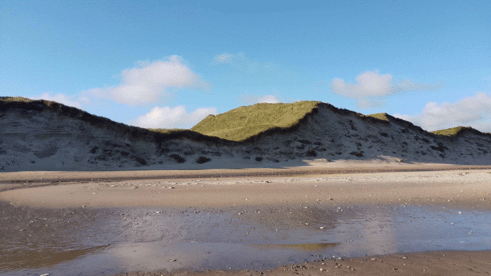
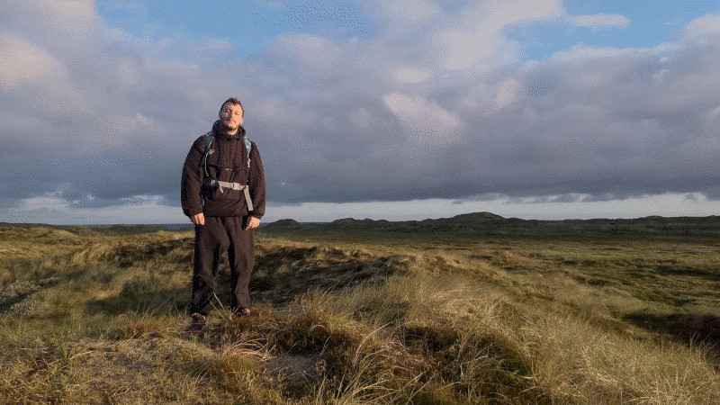
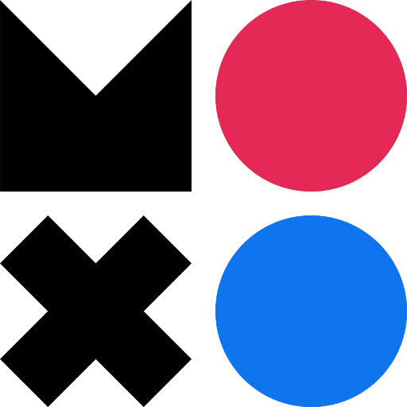

All Living Things DevLog
What makes a good Demo(man)
I suck at keeping a blog!
We are on Steam finally! After months of work we have four puzzles that we will show off five days from today. The progress has been slow but we are discovering the game as we are making it. I'm happy to say we've achieved everything we set out to do and a little bit more.
The demo will present the player with a cold open with three elements to select. I wanted to teach the player the premise of the game as soon as possible without any tutorials. I'm very happy with how that turned out, it feels seamless. The three puzzles show the player the core ideas. First puzzle is a simple three element puzzle, no trickery here. The second one shows the player that an element can be hidden in the process of another element. It's an easier puzzle than the first one but it can be only shown after the first one logically. The last puzzle has a fourth element which serves as a red herring. We sadly didn't have the time or funding to make the fourth puzzle which takes all of these ideas and puts the together. It's my intention to make that fourth puzzle and include it in the free demo after it's release.
I can't help being nervous showing it off to people, even though we've had nothing but positive reactions, I feel somewhat unsatisfied with how the game is right now. It's good to reach some milestone so you can have that catharsis that broadsides you and makes you open your eyes to see whats wrong or missing. As soon as we recieve feedback from the demo and adress any technical issues I will sit down and start drawing a more comprehensive plan for the entire game.
There are some other things that worry me. It's a strange game, it takes a lot of time to make and it's easy to solve (so far). I personally like short films and games that go straight to their point but it's a hard sell for a publisher. And we need a publisher or some kind of funding. It took me more than two weeks to write a Creative Europe grant application. The odds of getting that money are slim, but even then it is difficult to do all the things I need to do for the game like designing it and its puzzles, storyboarding and animating while also doing administrative work. I like it but the quality of my work is suffering, getting any kind of help will be appreciated.
This project is worth making, we are trying many interesting things from mechanics to art and even if it leads to ruin, it was a valiant effort. I will return to write about the feedback from the demo and finding out whats next for us. It is still up in the air if this project is happening, but I am determined to make something we can all be proud of.
4/6/2025Plan B (Previously plan A)
I've started animating the puzzle I am most confident in visually and mechanically. I have faint hopes of getting my teeth stuck in this and finishing it rapidly but I still have commissions waiting to be finished. I've always had problems with deadlines so this is no news, but somehow I make things work... For now!

Tower that eats people
Small Update
The big publisher we were in talks with shut down their operations!
13/9/2024Tak! Viborg!

Art direction
I spent 5 months in Viborg at the Open Workshop residency to develop All Living Things! My initial plan was to simply follow along a plan I set in our documentation and work on the animation but with mentorship I quickly discovered there was a lack of content in our game. I sat down for the first month to resolve some art direction stuff and find a way to test puzzles before committing to them through animation. Before long, our noble grant giver has setup meetings with publishers for us to pitch our game to.
I felt it was too early to do this...
I was no closer to having a demo than one month ago since we got the grant. The results of
the meetings were expected, people were very intrigued in the art but everyone was either
asking for a demo or not willing to risk on such small niche project. I dont resent them
for this, pitching was a valuable learning experience but being a person who can do only
one thing at a time it has taken a bite out of my work schedule. From creating a beautiful
pitch deck (with the help of my friends at OW and beyond!) to scheduling the meetings and
simply learning how to live in Denmark and not break my humble bank.
In the end I stumbled on a publisher that seemed fully interested in working with us on this project! It's a pretty big publisher and I'm excited to see how our talks develop!

Student graduation concert at the Animation Workshop
I was incredibly fortunate to meet incredible people at OW, ones who I wish will stay in my life forever, some who I fear I might never see again! There is too much to squeeze into one blog post but I hope to return as soon as opportunity allows. For now, I'm back in Croatia and I've realized that I have to trust my own plans. I've never achieved a goal in the way non-scatterbrained people do, so I have to find a way to go along my own grain...

National Park Thy

Fjord Filip 11/9/2024
